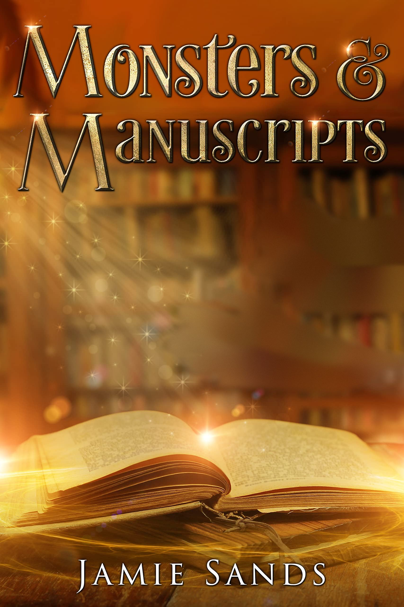
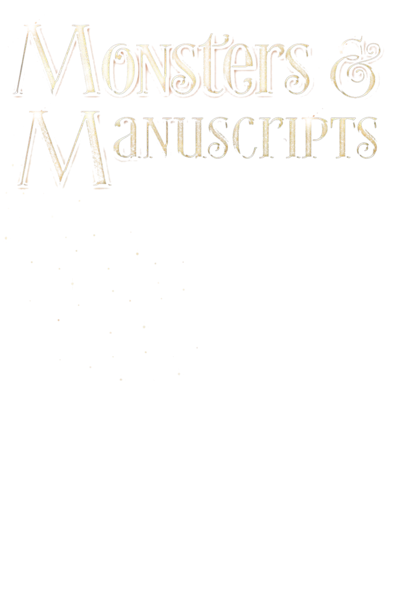
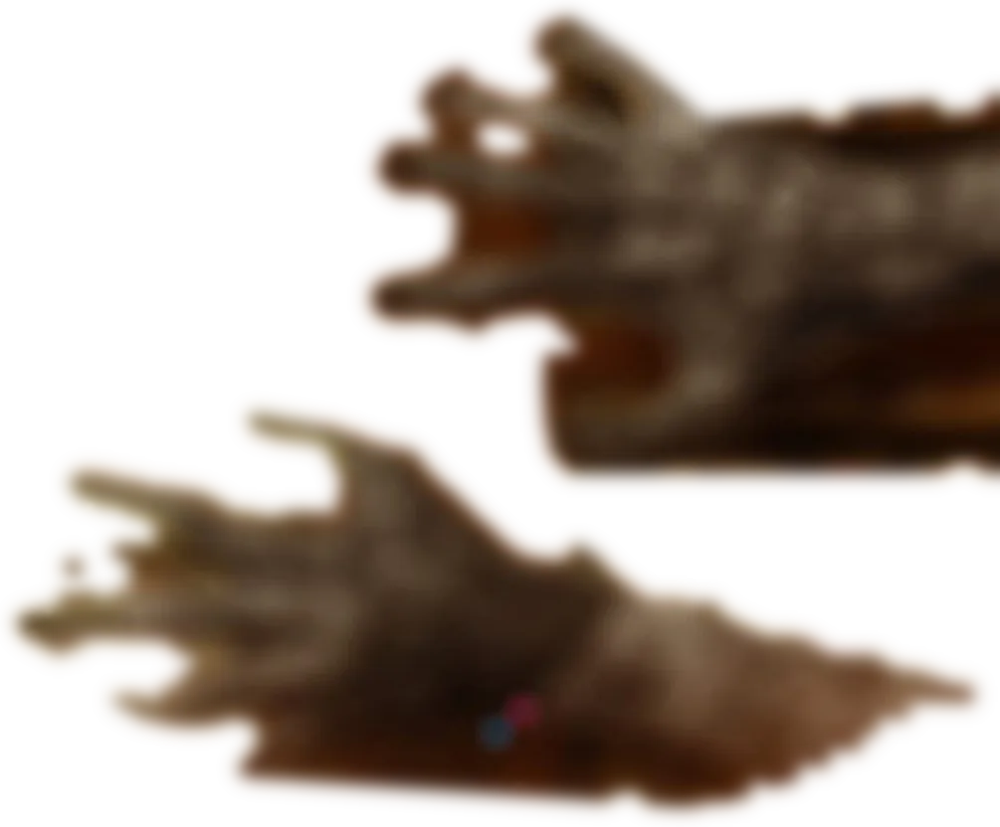
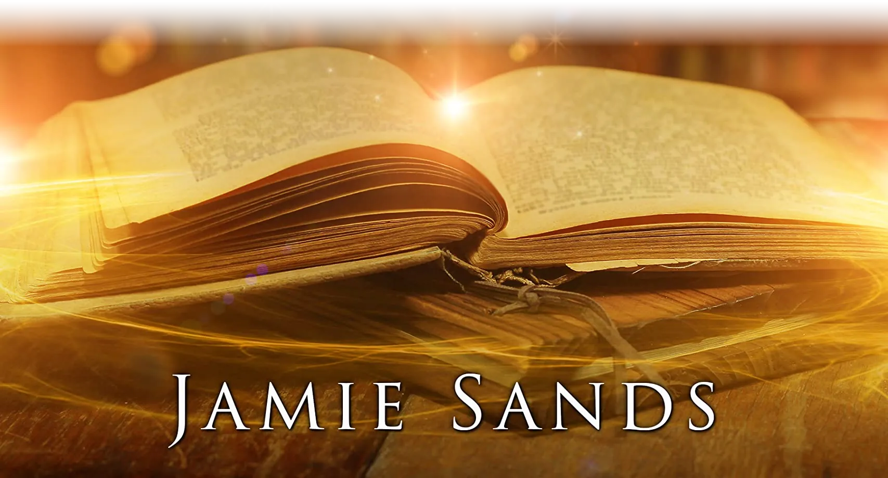
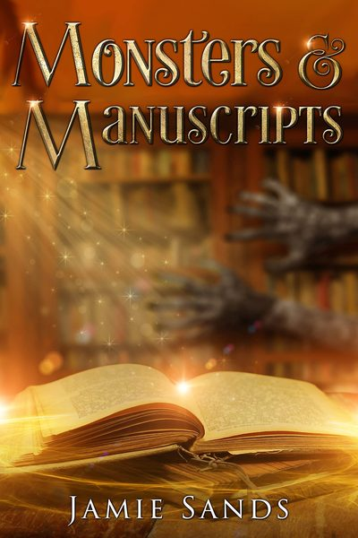
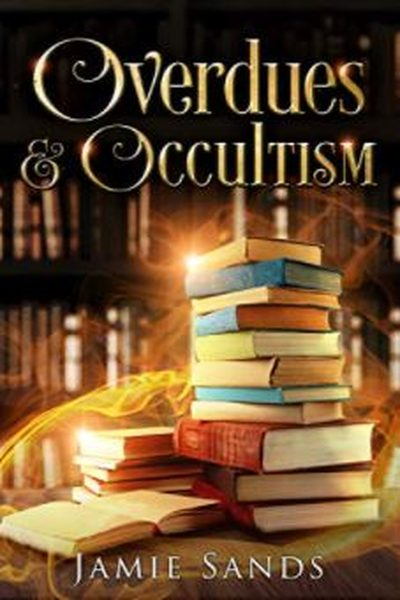
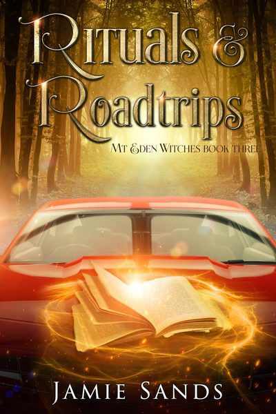
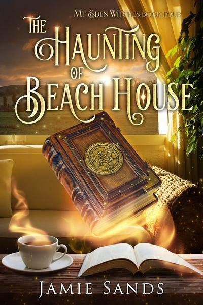

Mt Eden Witches, book two
Monsters & Manuscripts
Library witch Basil and YouTuber Sebastian, strange books turning up at the library, and an uninvited guest in the attic.

Monsters & Manuscripts
One witch. One paranormal investigator. Something that went bump in the night…
Library witch Basil and YouTuber Sebastian have settled into life together in the sleepy suburb of Mt Eden.
Basil is overjoyed to have a handsome boyfriend to come home to and he is connecting deeper with his magic. But when strange books start to turn up at his library and an uninvited guest makes noises in their attic, it’s up to them to investigate.
As a paranormal YouTuber, Sebastian can’t resist a new mystery. Especially since he’s been in one place for far too long… Is his enthusiasm for the next story going to ruin everything?
A novella with monsters, witches and a sweet gay romance, part of the Witchy Fiction project of New Zealand authors.
The Mt Eden Witches, in order
Four short books about Basil, a librarian who is also a witch, and Sebastian, the ghost hunter who wouldn’t stop snooping around his library.
-

Book oneAmazonOverdues & Occultism
A witch in the broom closet probably shouldn’t be so interested in a ghost hunter, right?
-
Book twoAll stores
Monsters & Manuscripts
Strange books at the library, and something in the attic.
-

Book threeAll storesRituals & Roadtrips
Basil wants a quiet holiday. Sebastian wants haunted places to film. A road trip around the upper North Island, and magic gets in the way.
-

Book fourAll storesThe Haunting of Beach House
The restless spirits of Beach House will not be ignored.
Come and find my table
C67
That was me at Armageddon Auckland this October. Next time, come and say hello.
- Rocky plushPolar fleece, felt appliqué and embroidery, made by me. NZ$55 on Payhip
- Notebooks and journalsA character journal for writers, a reading log and more. The full list
- Trading PlacesA journaling RPG. On itch.io
- The online storeFor New Zealand orders. Grey Kelpie Studio
Jamie Sands
Optimistic urban fantasy, queer romance, paranormal, and some things that don’t make sense.
I grew up in Wellington, a library devotee and a constant reader from very early on. Now I live in Auckland with my partner and two formerly stray cats.
I’ve had stories in the Baby Teeth horror anthology and Enamel literary magazine, and I’ve self published roleplaying games as well as fiction.
I’ve been to Japan three times, another trip is always being planned, and I would like to move into Tokyo Disneyland.